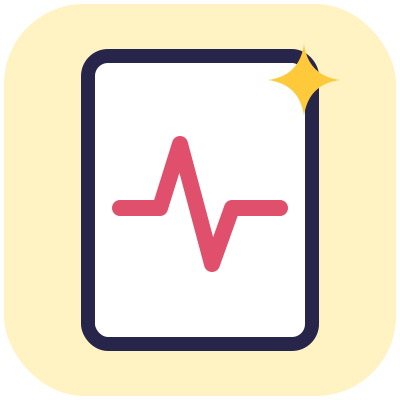

Percorso base · Prologo
Il respiro dei fogli bianchi

Hai mai guardato cosa succede a un disegno quando chiudi l'album?
Tutti pensano che i personaggi restino lì, piatti e addormentati sulla carta. Ma se avvicini l'orecchio al foglio, proprio dove hai premuto di più il colore, puoi sentire un piccolo battito.
Io sono Scintilla. Sono nata dal fascio di luce di un proiettore che non voleva spegnersi mai. Vivo dietro lo schermo, dove le storie prendono forma. Ma da sola non posso fare niente: non ho un corpo, non ho zampe, non ho ali.
Per creare un mondo intero ho bisogno di due cose che solo tu hai:
- la tua mano che disegna;
- la tua voce che racconta.
I grandi credono che questo sia solo un foglio di carta e uno schermo di vetro. Noi due sappiamo la verità: questo è un set. E tu sei il regista.